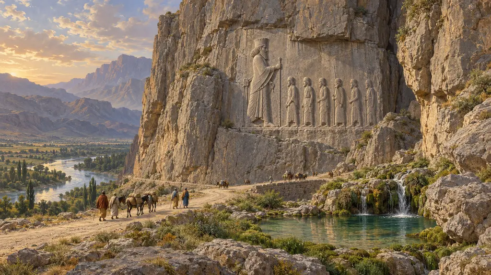
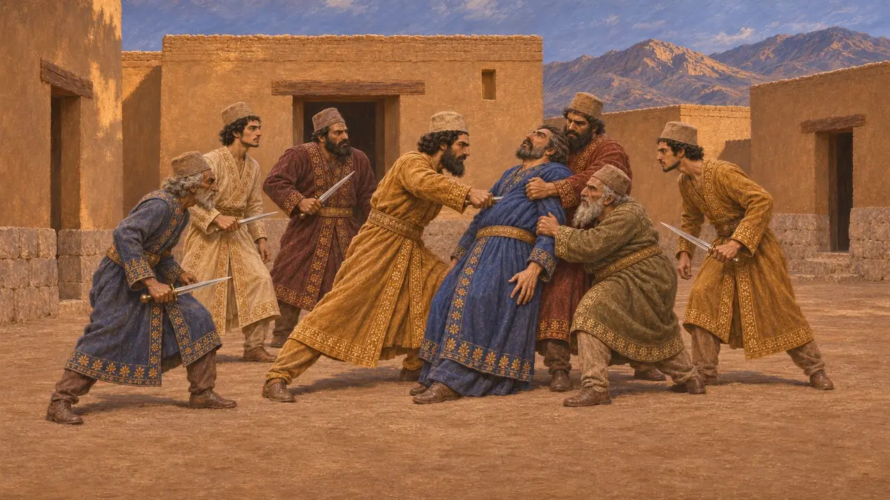
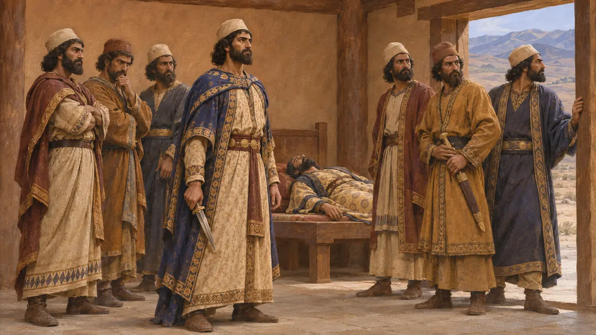
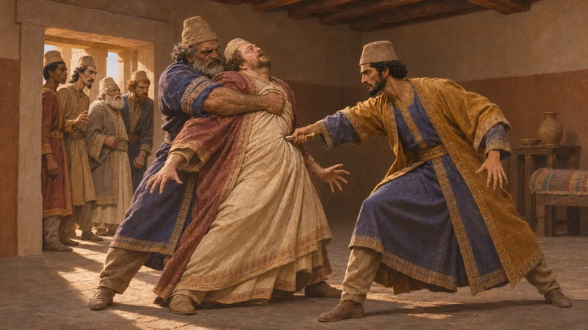
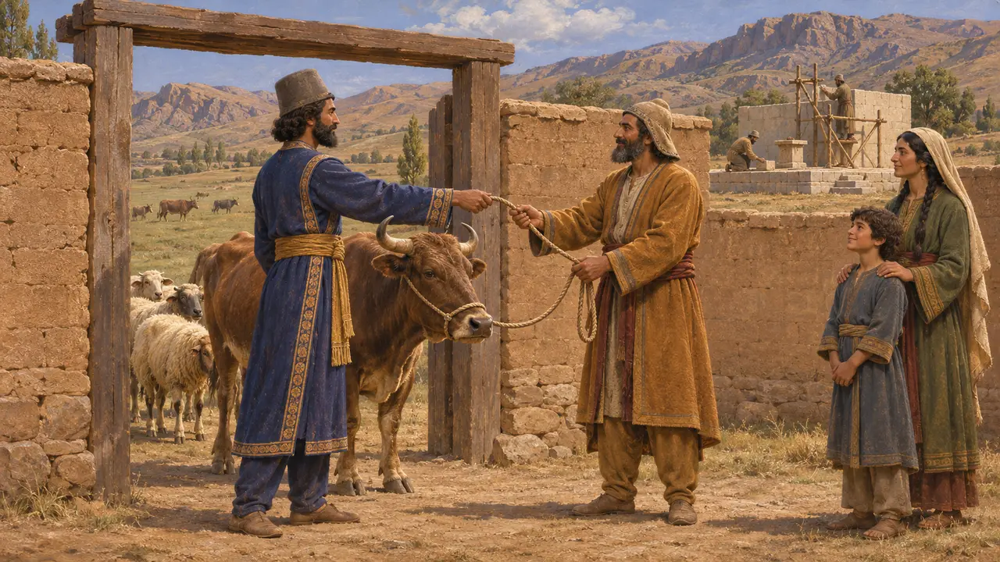
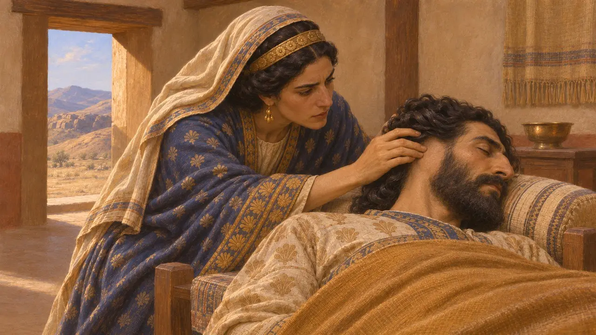

Enciclopédia › Batalhas e eventos

A morte de Gaumata
Dario e seis nobres matam o rei reinante em Sikayauvati, na Média, em 522 AEC
Em 29 de setembro de 522 AEC, Dario, filho de Histaspes, e seis nobres persas mataram o homem que então governava o império como Bardiya, filho de Ciro. Dario disse que sua vítima era Gaumata, um mago e impostor; o assassinato fez de Dario rei, mas desencadeou um ano de revoltas. Os historiadores ainda discutem se o rei morto era de fato o verdadeiro Bardiya.
No jogo: O jogo apresenta isso como um evento de 522 AEC, usando o nome que Dario dá ao rei morto, ao mesmo tempo que observa que alguns historiadores pensam que ele era o verdadeiro Bardiya. A data e a contagem de seis auxiliares correspondem à própria inscrição de Dario.

O relato do próprio Dario
Nos registrosNa inscrição de Behistun, Dario diz que um mago chamado Gaumata se levantou em Paishiyauvada em março de 522. Gaumata afirmava ser Bardiya, filho de Ciro e irmão de Cambises, e tomou o trono em julho daquele ano. Dario diz que ninguém ousou falar contra ele até que ele próprio chegasse. No décimo dia do mês de Bagayadi, por volta de 29 de setembro, Dario e alguns homens mataram Gaumata na fortaleza de Sikayauvati, no distrito de Nisaya, na Média.
DB §10-13

Os seis auxiliares
Nos registrosPerto do fim da inscrição, Dario nomeia os homens que estavam com ele, cada um com o nome do pai: Vindafarnah, Utana, Gaubaruva, Vidarna, Bagabukhsha e Ardumanish. Ele pede aos futuros reis que protejam suas famílias. Heródoto dá quase a mesma lista em formas gregas, como Intafernes, Otanes, Góbrias, Hidarnes e Megabizo. Onde Dario nomeia Ardumanish, porém, Heródoto traz Aspatines.
DB §68-69; Herodotus 3.70

A versão de Heródoto
Relato antigoHeródoto diz que Cambises mandou assassinar secretamente seu irmão Esmérdis, e que um mago de mesmo nome tomou então o trono com a ajuda de seu irmão Patizeites. Nessa versão, os sete invadiram à força o palácio de Susa, e não uma fortaleza na Média, e Dario apunhalou o mago num cômodo escuro enquanto Góbrias o segurava. Heródoto acrescenta que os persas passaram depois a celebrar uma festa da morte dos magos, que os gregos chamavam de Magofonia.
Herodotus 3.30, 3.61-79

Impostor ou verdadeiro filho de Ciro
DisputadoContratos babilônicos foram datados pelo reinado de Barziya durante todo o verão de 522, o que sugere que muitos súditos o aceitaram. Dario diz que reconstruiu os locais de culto que Gaumata havia destruído e devolveu as pastagens, os rebanhos e os trabalhadores domésticos que ele havia tomado, enquanto Heródoto diz que o rei havia dispensado o tributo e o serviço militar por três anos. Muitos historiadores suspeitam que Dario matou o verdadeiro Bardiya e inventou o impostor, mas outros aceitam seu relato.
DB §14; Herodotus 3.67; P. Briant, From Cyrus to Alexander, 2002

O mago sem orelhas
Lenda posteriorHeródoto conta como Otanes desmascarou o impostor. Sua filha Fédima era uma das esposas do rei e, enquanto ele dormia, tateou-lhe a cabeça e descobriu que ele não tinha orelhas, pois Ciro um dia as cortara como castigo. Heródoto diz também que os sete escolheram o novo rei conforme o cavalo que relinchasse primeiro ao nascer do sol, e que o cavalariço de Dario, Oebares, arranjou o resultado. As duas histórias parecem contos de corte, e não registros.
Herodotus 3.68-69, 3.84-87
Fontes
- Darius I, Behistun inscription (DB §10-14, §68-69)
- Herodotus 3.30, 3.61-88
- P. Briant, From Cyrus to Alexander, 2002
- A. Kuhrt, The Persian Empire: A Corpus of Sources from the Achaemenid Period, 2007
- R. Schmitt, The Bisitun Inscriptions of Darius the Great: Old Persian Text, 1991
- Ctesias, Persica (as summarised by Photius)